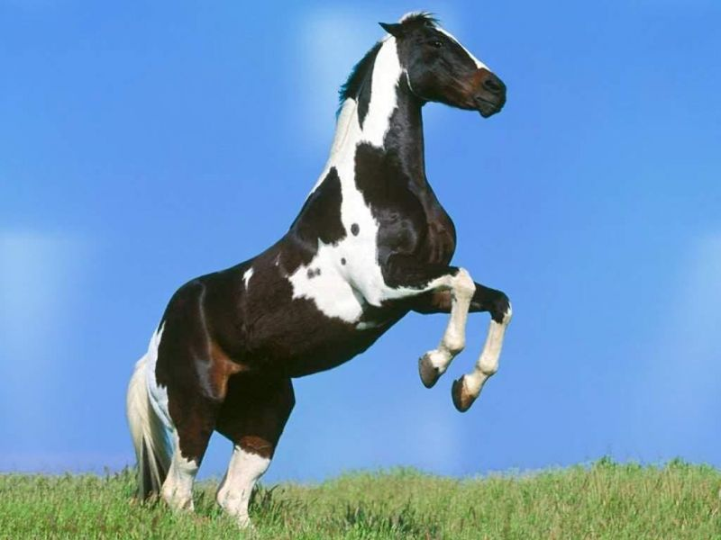

ARABE
El caballo de raza árabe (حصان عربي) debe su reputación a su inteligencia, carácter fuerte y resistencia sobresaliente. Con una cabeza característica y la cola siempre en alto, el caballo árabe es una de las razas de caballos mejor reconocidas en el mundo.
Es una de las razas de caballo más antiguas, ya que hay evidencia arqueológica de hace 4500 años de caballos muy similares a los árabes modernos.
Los caballos árabes se desarrollaron en un clima desértico y eran valorados por los nómadas beduinos, quienes frecuentemente los alojaban dentro de sus tiendas para cubrirlos y protegerlos.
Esta relación cercana con los humanos creó una raza de caballo con buena disposición, rápido para aprender, y dispuesto a complacer. Pero el caballo árabe también desarrolló el carácter fuerte y el estado alerta necesario en un caballo usado para los asaltos de las guerras. Esta combinación de disposición y sensibilidad requiere que los dueños modernos de caballos árabes traten sus caballos con respeto y mucha habilidad.
ALAZAN
Todavía es frecuente escuchar referencias erróneas al caballo alazán como una raza equina. Sin embargo, el término "caballo alazán" se utiliza para describir a los individuos de color rojizo, es decir, aquellos que poseen la capa alazana. Pueden encontrarse diversas razas, con orígenes, características físicas y temperamentos muy diversos. Los caballos alazanes exhiben una amplia variedad morfológica. Por lo general, tienen ojos castaños, aunque aquellos alazanes con una cara blanca (con manchas blancas que cubren sus párpados) pueden presentar ojos azules.
Los caballos acompañan al ser humano desde hace siglos, siendo una parte importante del desarrollo de nuestras sociedades. No obstante, a pesar de haber compartido tanto con ellos, aún nos queda mucho por conocer sobre las diferentes razas de caballos que existen en la actualidad. Precisamente por este motivo queremos invitarte a conocer mejor a uno de los equinos más admirados del mundo.
HISPANO-ARABE
El caballo hispano-árabe se originó en España, específicamente en la región de Andalucía. Los orígenes de esta raza se remontan a las invasiones musulmanas en la Península Ibérica, cuando se realizaron los primeros cruces entre los caballos autóctonos españoles y los equinos traídos del Oriente. Los caballos hispano-árabes se destacan por la armonía en sus características, combinando una notable resistencia física con una extraordinaria capacidad para realizar movimientos ágiles y precisos.
Aunque su aspecto sea corpulento debido a su musculatura, su silueta es, a su vez, esbelta, alta, con tronco fuerte, lomo amplio y dorso ligeramente curvado. La cabeza, por su parte, resulta relativamente pequeña en relación al tamaño de su cuerpo y es de forma piramidal.
LUSITANO
El caballo lusitano se considera de estilo barroco, destacando por una combinación armoniosa entre su masa y su apariencia exterior. Por lo general, su altura a la cruz oscila entre 1,50 y 1,60 metros. Su pelaje es corto, suave y brillante, y puede presentar tonalidades grisáceas, castañas, bayas y tordas. Además, existen variedades apreciadas, como el manto palomino y cremello, que son bastante raras en esta raza. El caballo lusitano de pura sangre es conocido por su gran valentía, su inteligencia privilegiada y su disposición para el aprendizaje.
Su alzada a la cruz va desde 150 a 160 cm, son compactos, de cuartos traseros musculosos, patas fuertes y largas, con gran amplitud en el paso, grupa inclinada, cola de inserción baja, pecho ancho, costillas redondeadas, amplia frente, nariz romana, crines y cola abundantes.
CAMARGUE
A primera vista, el caballo camargués puede parecer un ejemplar blanco, pero en realidad es un caballo negro. Posee una altura de entre 1,35 y 1,50 metros hasta la cruz. Es un caballo fuerte y robusto, con un peso que oscila entre los 300 y 400 kilogramos. En general, el camargués es un caballo inteligente y tranquilo que establece fácilmente una relación con su cuidador, adquiriendo rápidamente confianza en él.
La raza equina camargue es una raza muy antigua que vive en las marismas del delta del río Ródano desde hace muchos siglos. Esta raza fue utilizada en los ejércitos fenicios y romanos. Muchas razas equinas poseen un ascendiente de sangre camargue a través del caballo ibérico (jaca). Hay razón para creer que los jaca eran parte caballo celta, y otra parte camargue. En aquellas razas equinas que provienen de sangre jaca-camargue, especialmente las razas criollo se manifiesta la habilitad de los camargue para sobrevivir en condiciones extremas. Hoy en su gran mayoría son cuidados y usados por los gardians para arrear toros (cuya raza ganadera también se llama camargue). Estos toros participan en la corrida camarguesa, un juego deportivo en el que no se da muerte al animal.
APPALOOSA
Los caballos appaloosa, también conocidos como caballos moteados o pecosos debido a las manchas en sus pelajes coloridos, son una raza ancestral ampliamente distribuida en todo el mundo. No obstante, fueron los nativos americanos de la tribu Nez Perce quienes les otorgaron el nombre de appaloosa en honor al río Palousse. Esta tribu reconoció en estos caballos el compañero ideal para diversas tareas, como la caza y la guerra, dedicando más de 200 años a su domesticación y selección de ejemplares más aptos para estas labores.
El nombre de la raza appaloosa proviene del río Palouse, que atravesaba la región habitada por los Nez Perce. Cuando veían un caballo moteado decían que "era un caballo del río Palousse" (a palousse river horse) y de allí quedó en appaloosa.
PINTOS

La cría de estos equinos se atribuye a los nativos americanos de la tribu de los Pieles Rojas en América del Norte, quienes decidieron cruzar varias razas, como el caballo inglés y el árabe. Con una altura promedio de 152 cm, estos caballos presentan muchas características heredadas de los caballos árabes, como su peso medio que ronda los 500 kilogramos. Su hocico y patas son más cortos en comparación con otras razas y también se destacan por su docilidad y habilidad para aprender rutinas con rapidez.
Nació como «caballo de los indios», siendo los «pieles rojas» quienes iniciaron su cría. Estos buscaban los caballos más salvajes con el fin de cruzarlos con los caballos españoles. Los cruzados con la raza Quarter horse dieron origen al Paint horse, muy similar al Pinto, pero con características propias del Quarter.
El Pinto se viene criando de forma controlada desde 1930, año en el que se comenzó a buscar un aspecto homogéneo a través de la mezcla con el purasangre inglés y el caballo árabe. Se puede decir que se trata de una raza que todavía se está consolidando y que ha tenido un éxito reciente.
PARCHERONES
Esta raza se originó en la provincia de Perche, cerca de Normandía, en Francia. Este caballo procede del caballo árabe.[cita requerida]
Se cree ampliamente que el caballo árabe jugó un papel importante en el desarrollo del percherón. En las cruzadas, la casta de percherón fue reconocida ampliamente como excelente por su fuerza y entereza, así como por su belleza y estilo. Se atribuye a Rotrou III, conde de Perche, el haber introducido esta raza en su territorio tras haberla conocido participando en la Reconquista junto a su primo, Alfonso I el Batallador.1
En el siglo xvii los caballos producidos en Le Perche tenían una fama muy extendida. El percherón del siglo xix se adaptó a tirar de los coches pesados del correo en Francia.
En 1823, un caballo llamado Jean le blanc fue cruzado con una yegua en Le Perche y todos los descendientes de percherón se remontan directamente a este caballo.
FRISON
Las crines de la cola y del cuello son muy espesas y abundantes, a veces pueden estar ambas trenzadas o algo onduladas. De la cabeza podemos decir que es bastante larga y está provista de orejas pequeñas, que siempre están erguidas y elegantes, características de su gran docilidad y excelente temperamento. En cuanto al carácter, son muy tranquilos y tienen mucha presencia, por lo que lo convierten en un animal perfecto para el tiro (véase caballo de tiro). También ha sido empleado en el circo a consecuencia de su pelaje negro, su majestuosidad y su talla impresionante. Antiguamente fue el caballo de guerra de los alemanes, el cual ha ido mejorando mediante diversos cruces, en especial con los caballos andaluces. Los países donde el caballo frisón es más apreciado son Holanda y Bélgica. Los caballos frisones son casi siempre negros como el azabache o, en algunos casos, castaños oscuros. No se permite ningún tipo de manchas, con una gran abundancia de pelo en las patas. Miden de 1,65 m a 1,75 m a la cruz.
ANDALUZ
El caballo andaluz es una raza de caballo originaria de Andalucía. Se trata de un caballo ibérico de tipo barroco que está entre las razas equinas más antiguas del mundo. En España también se le conoce comúnmente como "caballo español" y se le denomina oficialmente Pura Raza Española (PRE), porque se considera que el andaluz es el caballo español por antonomasia, a pesar de que existen muchas otras razas equinas españolas. Sin embargo en la mayoría de países recibe el nombre de "caballo andaluz".1 El caballo cartujano es una de las líneas de cría más importantes de esta raza.
A lo largo de la historia el caballo andaluz ha tenido un papel fundamental en la formación de razas equinas europeas y americanas, como el caballo hispano-árabe,2 hispano-bretón,3 el frisón, el azteca, el lipizzano, el kladruber, el peruano de paso, el mustang, el Alter Real y el lusitano.